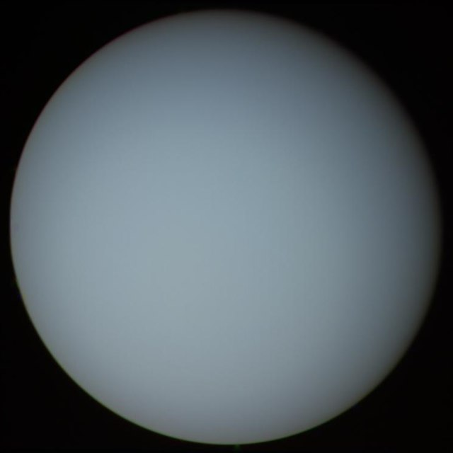

Általánosságban
Az Uránusz a Naprendszer hetedik bolygója. Óriásbolygó, a harmadik legnagyobb átmérőjű és a negyedik legnagyobb tömegű. Az Uránusz felfedezését 1781. március 13-ától számítjuk, mert ekkor pillantotta meg először Sir William Herschel. Azóta tudjuk, hogy a bolygót előzőleg 1690 és 1771 között legalább hússzor regisztrálták, de mindannyiszor csillagnak vélték. Az elmozdulását pedig mérési hibának. Herschel eleinte nem volt tisztában vele, hogy a Naprendszer egy eddig ismeretlen bolygóját fedezte fel, először üstökösként azonosította az égitestet.
Megfigyelés
Az Uránusz nem mindig pillantható meg szabad szemmel, a látszó fényessége a szem érzékenységének határán mozog. Amikor szembenállásban van a Nappal, és rendkívül tiszta az ég, akkor nagyon halvány égitestként megpillantható. Hogy a bolygókorong látszó átmérője akkorának látszódjon távcsövünkben, mint a Hold szabad szemmel, és néhány felszíni részletet is láthassunk, ahhoz 300-350-szeres nagyítást kell alkalmaznunk 18-20 centiméteres átmérőjű teleszkóppal. Ha a fényszennyezés kicsi, vagy egyáltalán nincs, akkor ilyen nagyítás mellett akár az 5 legnagyobb holdja is látható (Ariel, Miranda, Umbriel, Oberon, Titánia), de ahhoz, hogy a bolygó korong alakja látható legyen, elég 70-80-szoros nagyítás is. Néha sötétebb sávszerű képződményeket is megpillanthatunk, ennek legkedvezőbb ideje 42 évenként van mostanában 2011 tájékán volt, amikor az egyenlítő síkja a Föld felé fordul.

Tengelye
Az Uránusz tengelyferdesége 90°-hoz nagyon közeli, ezért a keringési idő egy jelentős részében az egyik pólus van a Nap irányában. A pólusok több energiát kapnak a Naptól, ennek ellenére a bolygó az egyenlítő közelében a legnagyobb hőmérsékletű, ismeretlen okokból. A nagy tengelyferdeség egy korai bolygóméretű objektummal való ütközés során jöhetett létre több milliárd évvel ezelőtt.